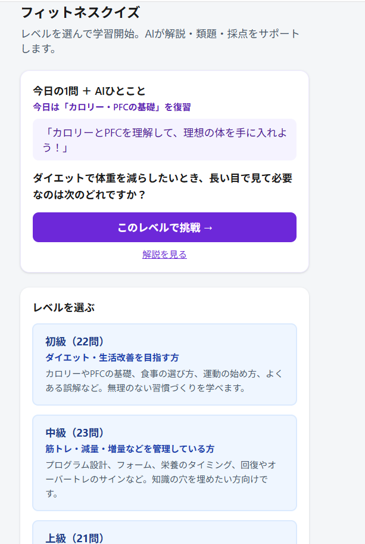

制作実績 / フィットネスクイズ AI
Fit Quiz AI
スタッフ教育・会員向けコンテンツとして使える、レベル別フィットネスクイズです。

ジム・スクールで、トレーナー知識のばらつきや、会員への説明の質をそろえたい。テキストだけのマニュアルでは定着しにくい。
初級・中級・上級の3レベルで、テキスト問題（66問以上）に挑戦できるWebアプリを構築。ホーム → クイズ → 解説 → 復習の4画面構成で、回答後に解説を表示し、復習リストで弱点を再確認できます。AI機能（問題生成・解説補助など）も実装済みです。
ログインなし・自分用運用を想定したシンプル構成。問題はMarkdownからJSONへ変換するバッチも用意し、人間監修しながら問題を増やせる設計です。
「答える → 理解する → 復習する」の学習サイクルをUIで固定することで、単なる問題集ではなく教育ツールにできます。会員向けログイン、正答率ダッシュボード、画像問題の拡充などに対応可能です。
ジム・スクール向けの教育コンテンツとしてご相談ください（料金：要相談）。